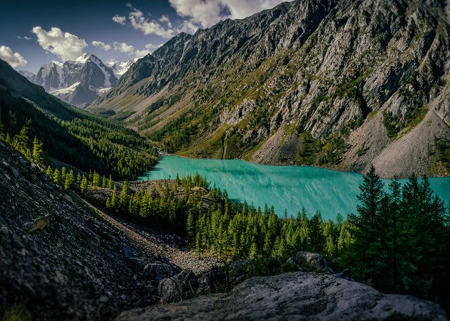
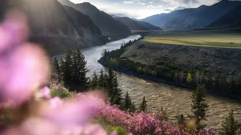
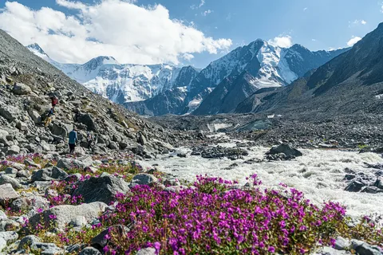
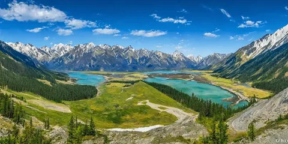

Край бирюзовых озер, бурных рек и суровых четырехтысячников. После Хибин этот регион манит своими масштабами, абсолютно дикой природой и возможностью проверить себя на совершенно новых высотах.
Главные вершины и хребты
- Гора Белуха — высшая точка Сибири (4506 м), требующая серьезных альпинистских навыков.
- Пик Делоне и его массивные вековые ледники.
- Северо-Чуйский хребет с его острыми скалистыми пиками.
- Купол Трех Озер — идеальная панорамная вершина для акклиматизации.

Природные локации
- Шавлинские озера — визитная карточка района с невероятным цветом воды.
- Долина реки Аккем, откуда открывается легендарный вид на Аккемскую стену.
- Каракольские озера — цепочка высокогорных водоемов разного оттенка.
- Цветущие долины, резко контрастирующие со снежными шапками гор.

Специфика и подготовка
- Высоты: Значительно выше Заполярья, необходима грамотная акклиматизация.
- Документы: Обязательное оформление погранпропусков за 2 месяца до старта.
- Снаряжение: Более теплый спальник (комфорт до -10°C) и жесткие горные ботинки.
- Логистика: Сложная заброска на лошадях или вездеходах из Тюнгура.

